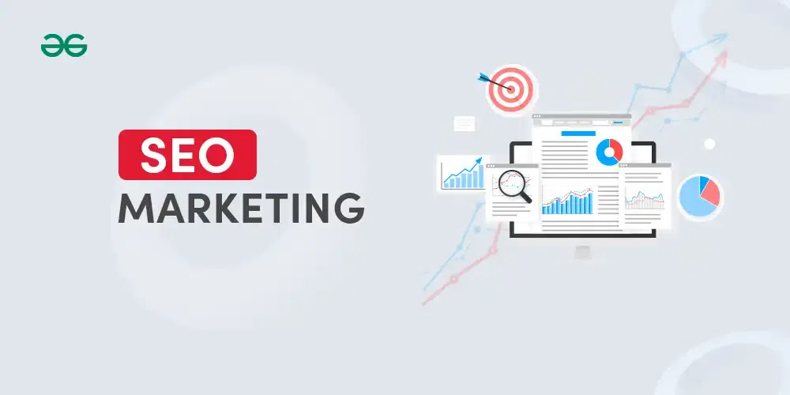

What Is SEO Marketing ?
SEO Marketing, an acronym for Search Engine Optimization Marketing, stands as the foundation for enhancing a website's online presence. SEO marketing serves as a strategic toolkit, with broad techniques such as keyword optimization, content refinement, and link building. It is an essential practice for website owners aiming to boost visibility organically(non-paid) on search engines, ultimately attracting a targeted audience. By understanding and implementing SEO marketing principles, businesses not only navigate the difficulties of search engine algorithms but also position themselves strategically to thrive in the competitive online environment.

Table of Content
- What is SEO Marketing?
- Types of SEO marketing
- Why SEO Marketing Is Important?
- How To Improve SEO Marketing
- Benefits of SEO marketing
What is SEO Marketing?
SEO marketing, or search engine optimization marketing, is the technique
of improving a website's content and structure so that it will appear more often
in search engine results, thereby creating more organic traffic and improving a website's
online exposure. It's a long-term strategy that helps to attract more visitors
to your page or website, generate more leads and sales, and build
brand awareness.
Components of SEO Marketing:
- Keyword Research: Keyword research is the method of exploring and selecting specific words or phrases that people use in search engines. Once you've determined the appropriate keywords, you may center the content and code of your website around them. It is a crucial component of any SEO strategy since it enables you to comprehend the needs of your target market and how to best optimize your website to appear higher on search engine results pages (SERPs).
- Content Marketing: The practice of creating and sharing excellent content to draw in and engage your target audience is known as content marketing. Content marketing may be used to advertise your website, create backlinks, and enhance your overall SEO performance. Incorporating SEO marketing strategies into your content marketing efforts can further optimize your content for search engines, improving visibility and driving organic traffic to your website.
- Technical SEO: Technical SEO is the process of improving a website's technical components so that search engines can better crawl, index, and display the website. This involves making sure the website is user-friendly on mobile devices, loads quickly, and has a straightforward site structure.
- On-Page Optimization: Optimize on-page elements such as titles, meta descriptions, headings, and content to align with targeted keywords and improve search engine rankings.
- Quality Content Creation: Develop high-quality, informative, and engaging content that addresses the needs of your target audience. Content is a critical factor in SEO success.
- User Experience (UX): Ensure a positive user experience by creating a well-designed, easily navigable website with fast load times and mobile optimization.
Types of SEO marketing
Types of SEO marketing are as follows:
1. On-Page SEO
The technique of making changes to a website's content and HTML code to improve its ranking in search engine results pages and attract more relevant traffic is known as onsite SEO. This is not the same as offsite SEO, which focuses on improving external components like backlinks and social media signals. In SEO marketing, onsite SEO plays a pivotal role in optimizing the content and structure of a website to align with search engine algorithms. By implementing
effective onsite SEO strategies, businesses can enhance their online visibility,
target specific keywords, and ultimately improve their overall SEO marketing performance.
2. Off-page SEO
Off-page SEO, often referred to as offsite SEO, is the practice of improving factors that are not directly linked to a website to increase its ranking in search results. High-quality backlinks may be created to accomplish this. website promotion using social media and other online marketing strategies
3. Technical SEO
Technical SEO comprises web page optimizations that improve a website's crawlability and indexation for search engines, hence improving the website's search engine ranking. These include optimizing website load speeds, ensuring that robot txt files are correctly set up, and setting up redirects. In SEO marketing, technical SEO plays a crucial role in enhancing the overall performance of a website, ensuring that it meets search engine guidelines and standards.
4. Local SEO
Local SEO strategy, which increases a company's visibility in Google's local search results by analyzing the behaviour of the local audience via billions of searches, is one of the most important types of SEO for local businesses. Local SEO helps businesses interact with local customers. If you use local SEO strategies, your local business has the opportunity to rank higher in both the local map pack and the search results simultaneously. Consequently, your company grows and more people visit your website.
5. E-commerce SEO
SEO is one of the finest ways to boost traffic through sponsored search for e-commerce, even if SEO costs are significantly less. It helps with developing your e-commerce website so that it ranks better on search engine results pages. To keep access to qualified and prospective e-commerce customers, your website has to be featured in the search engine results pages (SERPs). If competitors' study focuses on homepage SEO and website architecture, e-commerce SEO marketing may improve your website to bring visitors and enhance search volumes.
6. Mobile SEO
The process of optimizing a website for search engines while simultaneously ensuring that it displays correctly on mobile and tablet devices is known as mobile SEO. If a customer has a bad experience with that brand of mobile phone, they might never use it again. If you want your clients to have the best experience possible, you must use this type of SEO. It's important to ensure that the organization and style of your website don't impact mobile users' judgments.
7. Voice Search SEO
Website and content optimization for voice search is known as voice SEO. Using the appropriate keywords and phrases, optimizing for local search, and producing high-quality content that speaks to your target market are all part of this process. Due to the rise in popularity of voice search and the possibility for your website to rank better in search results and attract more visitors, voice SEO is crucial.
8. Video SEO
The technique of making your videos more search engine friendly to help them appear higher in search engine results pages (SERPs) is known as video SEO. This can help you attract more viewers to your videos, increase brand awareness, and drive traffic to your website. Incorporating video SEO marketing strategies ensures that your video content is optimized not only for viewers but also for search engines, enhancing its discoverability and overall impact on your digital marketing efforts.
9. International SEO
International SEO helps your website receive more organic traffic from different languages and nations. You must consider the cultural context of your target market if you want to succeed with international SEO marketing, and you must provide them the opportunity to transact in their chosen language and currency. Providing a good online experience for your target market is the aim of international SEO marketing.
10. Content SEO
Content SEO is a different category on the list of SEO subtypes. Creating fresh content, whether it be text, images, or videos, is necessary to arrange your website and improve its ranking in the search engine results pages. When working with content SEOs, three aspects need to be considered: copywriting, site architecture, and keyword strategy. Finding a balance between the three is essential since without excellent content, search engines won't show up for your website. Furthermore, it is equally important to review the content after it has been published as it was before. Monitor how successful your content is. Use a variety of strategies, make the necessary changes, and add new products to your website to grow its viewership.
Why SEO Marketing Is Important?
Getting noticed by users who are interested in what you are offering is an indicator of a successful website; it could be content, a product, or a service. It was noticed that 49% of the shoppers Google to discover new products or items.
With this approach, your website needs to appear at the top and more often in search engine results for phrases associated with your offering. Even if your website is content-rich but your search ranking is low, visitors will not be able to find it.
How To Improve SEO Marketing
Here are some ways that companies can boost their marketing SEO results:
- Create high-quality content: This is one of the most important things that we can do to improve SEO. Your content should be relevant to the keyword of the target audience, it should be informative and engaging also.
- Optimize your website for relevant keywords: Use your top-ranking keyword throughout your website appropriately and including page title, meta descriptions, header tags, etc. However, avoid keyword stuffing should be avoided as it hurts the website in SERPs.
- Build backlinks from high-quality websites: Backlinks are links to your website made by other websites. They let search engines know that your website is reliable and credible. Guest blogging, submitting your website to directories, and advertising your material on social media are all ways to increase backlinks.
- Mobile Optimiztion: The website should be designed in such a way that it should be flexible in accessibility to mobile devices and they are more prevalent these days.
- Promote your website on social media: Social media platforms are the best platform to promote your website and content, and they can also play a crucial role in SEO marketing by helping you generate backlinks. Leveraging social media channels not only enhances your online visibility but also contributes to building a strong online presence, driving organic traffic, and improving the overall performance of your website in search engine results.
- Track your results and adjust your strategy as needed: There are multiple SEO tools online to track the performance of your website, from tracking website traffic to ranking and many other key metrics can be measured.
Benefits of SEO marketing
SEO marketing has many benefits, such as :
- Increased website traffic: When your website starts ranking higher in SERPs, it becomes more accessible to the users, who are in hunt of relevant information or products that you offer. The increase in visibility would lead to a higher click-through rate, resulting in exponential growth in website traffic. More the traffic, the more the chances of audience engagement that will in-turn convert to customers or leads
- More leads and sales: You are more likely to produce more leads and sales when there are greater visitors to your website. The prime goal of a business website is to generate more leads or sales. Increases in website traffic will lead to a larger pool of potential customers. Optimization of your website for search engine, improves the audience visit to the website who are genuinely interested in the product and services that you offer.
- Increased brand awareness through SEO Marketing:For long-term success, brand recognition is essential. Your brand becomes more recognizable and credible when visitors have a great experience on your website and it frequently appears among the top search results. In the realm of SEO marketing, brands that consistently rank at the top of SERPs (Search Engine Results Pages) are more likely to be trusted, which may significantly increase brand recognition and foster consumer loyalty. Additionally, the heightened brand awareness facilitated by effective SEO strategies may create new business prospects, including alliances and collaborations.
- Improved ROI: SEO is well known for being economical in the marketing sector. Due to its focus on consumers who are already interested in what you have to offer, it gives a high return on investment. This means you're not wasting money on advertising to a group of people who might not be interested. Making every marketing dollar count, you are instead focusing your efforts and resources on those who are already interested in your goods or services.
- Long-term results with SEO Marketing:Although SEO may take some time to fully manifest its benefits, the consequences are frequently long-lasting. In the context of SEO marketing, the optimization you carry out on your website might continue to work in your favor for years to come, unlike certain short-term marketing techniques that demand constant spending. If you put in persistent work, your website can hold its place in the search results until it has established itself as a reliable source of organic traffic and conversions. Effective SEO marketing strategies contribute to the sustained visibility and performance of your website, providing enduring results for your online presence.
Conclusion
Implementing SEO marketing strategies can effectively enhance your business's
online presence by increasing its visibility on search engine results pages (SERPs). Consequently,
this can result in augmented website traffic, an influx of leads and sales, and heightened brand recognition. To enhance your SEO, prioritize the creation of top-notch content, fine-tune your website to incorporate pertinent keywords, and establish quality backlinks from reputable websites. Additionally, ensure that your website boasts a mobile-friendly interface and swift loading times.